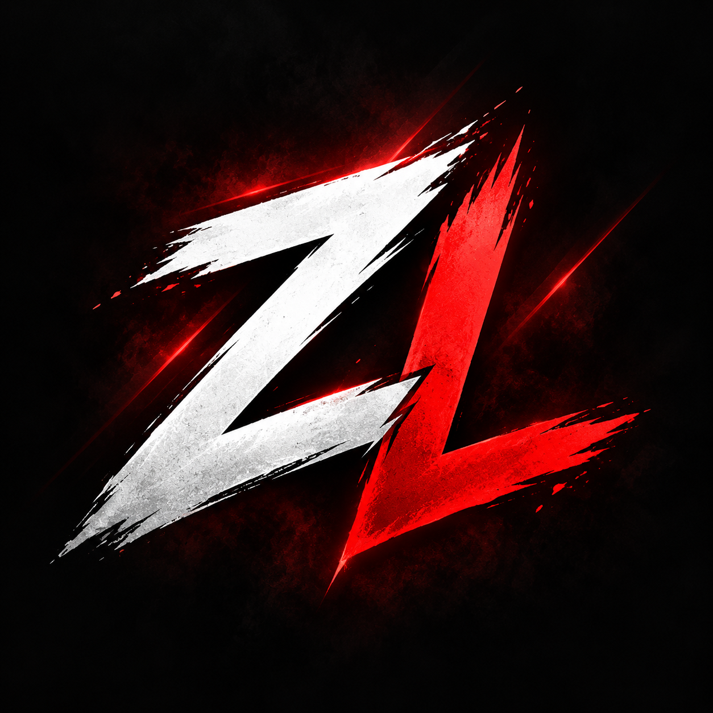
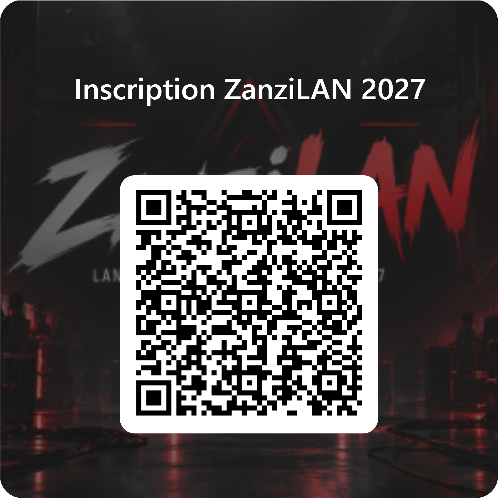

BYOC
Apporte ton PC, tes périphériques et ton setup.

ZANZILAN26 — 28 MARS 2027 • 3 JOURS • BYOC
ZanziLAN rassemble 150 joueurs pour un week-end VALORANT compétitif, entre matchs, stratégie et ambiance LAN.
L'ÉVÉNEMENT
Pendant trois jours, les équipes installent leur propre matériel, jouent côte à côte et s'affrontent dans un tournoi VALORANT organisé sur place.
Le projet prévoit une infrastructure réseau dédiée, une alimentation électrique adaptée, un espace restauration et une équipe de staff pour assurer le bon déroulement de l'événement.
Apporte ton PC, tes périphériques et ton setup.
Infrastructure pensée pour des matchs stables.
Boissons et nourriture prévues pendant le week-end.
FORMAT DU TOURNOI
Un format progressif pour garantir plusieurs matchs avant les phases à élimination directe.
Phase de groupes
Quarts de finale
Demi-finales
Grande finale
Le format exact des groupes, BO1/BO3 et règles de départage pourra être ajusté avant l'événement.
PROGRAMME
Check-in des équipes et installation des setups.
Règlement, déroulement et informations techniques.
Lancement de la phase de groupes.
Pause, jeu libre et détente.
Suite de la phase de groupes.
Restauration sur place.
Début des matchs à élimination directe.
Soirée LAN et activités communautaires.
Les quatre meilleures équipes s'affrontent.
Le dernier BO décide du vainqueur.
Podium, photos et clôture du tournoi.
Rangement et départ des participants.
INSCRIPTIONS
L'inscription concerne une équipe complète de 5 joueurs. Les informations ci-dessous servent actuellement de démonstration pour le projet.
Pour inscrire ton équipe, remplis le formulaire officiel ZanziLAN. Une seule réponse est nécessaire par équipe.
L'inscription sera confirmée après vérification des informations envoyées.
INSCRIPTION RAPIDE
Tu peux aussi accéder au formulaire directement depuis ton téléphone en scannant ce QR code.
Ouvrir le formulaire d'inscription →
FAQ
BYOC signifie « Bring Your Own Computer ». Chaque joueur apporte son propre PC, écran, clavier, souris, casque et câbles nécessaires.
Le projet prévoit environ 150 joueurs, soit 30 équipes de 5 joueurs.
Le lieu définitif est encore en cours de sélection. Il sera annoncé une fois la salle validée.
Non. ZanziLAN est un projet d'événement communautaire et n'est pas affilié à Riot Games.